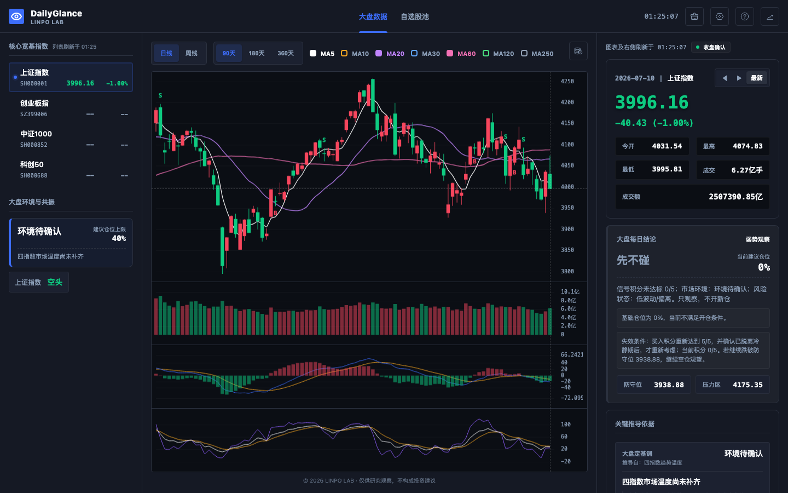
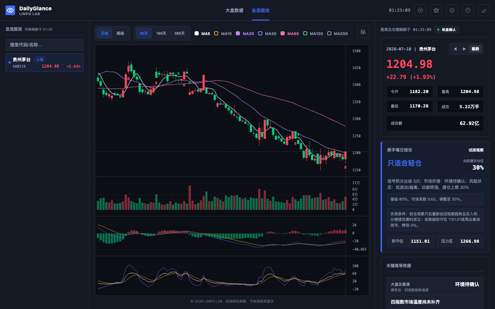
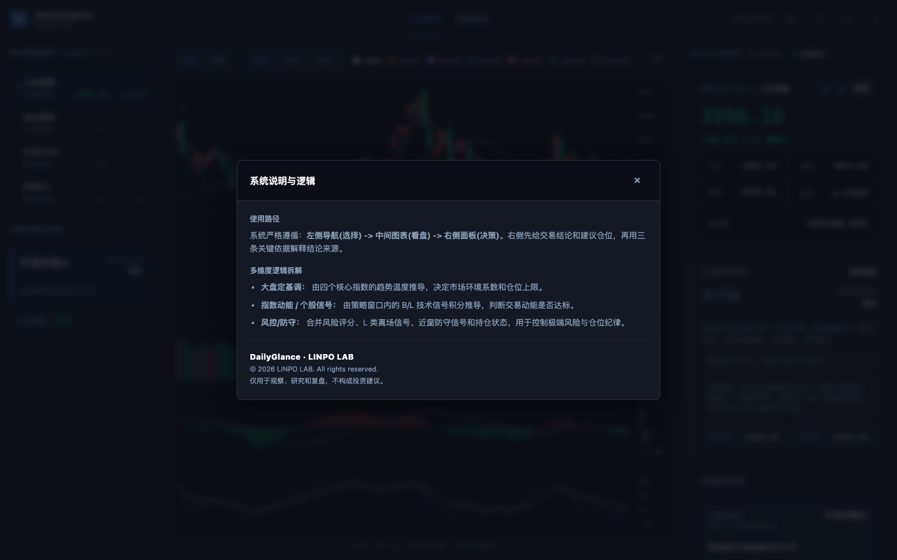
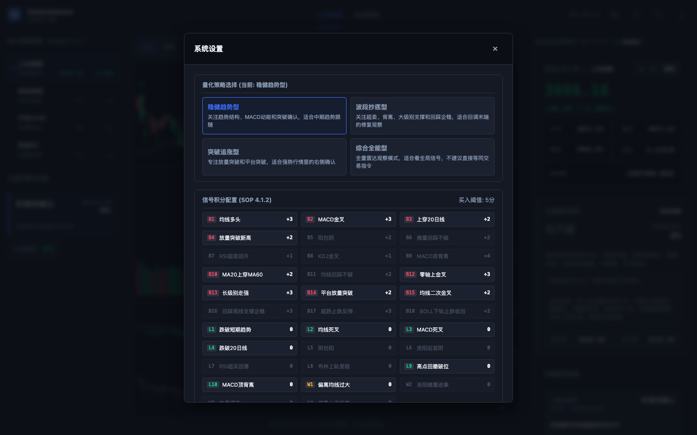

从市场环境到个股依据的每日观察闭环。
01 / 实验速览
先建立观察顺序，再解释结论从哪里来。
面向电脑端使用的网页量化观察工具。
依赖外部行情、本地缓存与当前浏览器状态。
市场、个股、系统说明和策略设置四类界面。
02 / 主界面证据
先看市场环境，再进入一只股票的走势与依据。
两张主证据证明观察路径的主体，不证明行情永远实时或结论可以直接执行。
Stage A / 市场环境
价格轨道、技术指标与每日结论在同一观察面
三栏结构让用户先选择指数，再看图表，最后阅读仓位、风险和关键推导依据。
真实截图 · 2026-07-13 · revision ae50972b
Stage B / 个股聚焦
自选股下钻保留走势、仓位、风险和失效条件
个股详情把“看到一只股票”变成可解释的观察：结论旁边保留仓位上限、防守位、压力区和关键依据。
真实截图 · 2026-07-13 · revision ae50972b
03 / 解释与配置证据
阅读路径被说明，策略条件也可以被看见。
这两张图只证明系统提供解释和配置入口，不与市场总览主证据平级。
Guide / 阅读方式
系统说明把选择、看盘和决策串成明确路径
帮助层解释左侧导航、中间图表和右侧面板各自承担什么责任，降低第一次使用的理解成本。
真实截图 · 2026-07-13 · revision ae50972b
Settings / 规则配置
策略类型与信号积分条件被显式暴露
设置面板允许用户查看和调整策略类型、买入信号与风险条件；可配置不代表策略已经被充分验证。
真实截图 · 2026-07-13 · revision ae50972b
04 / 运行边界
它组织观察，不替代数据校验和独立判断。
完整项目在本地维护，GitHub Pages 只部署必要页面资源；工具以电脑端为主，移动端不承诺完整交易终端体验。
关键限制：行情依赖外部接口与缓存，策略结论只用于观察、研究和复盘，不构成买卖建议，也不执行任何账户操作。
05 / 六步观察流程
从环境到记录，每一步都保留判断依据。
01 · 选择环境先看核心指数与市场温度。
02 · 查看轨道阅读 K 线、均线和技术指标。
03 · 聚焦候选进入自选股或目标个股。
04 · 阅读依据检查仓位、风险和失效条件。
05 · 调整策略查看策略类型与评分规则。
06 · 留下观察把当天状态用于后续复盘。
历史 K 线和实时行情共同服务图表最后一根与右侧报价，任一来源异常都会影响观察可信度。
自选、缓存和部分偏好保留在当前浏览器，适合个人工具，不等于跨设备数据仓库。
06 / 实验结论
观察路径已经成立，数据与策略可信度仍需持续证明。
已成立
市场、图表、结论与解释形成了稳定的三栏阅读顺序，个股下钻也保留风险和依据。
仍薄弱
外部数据稳定性、实时状态一致性和策略样本验证仍会直接限制结论可信度。